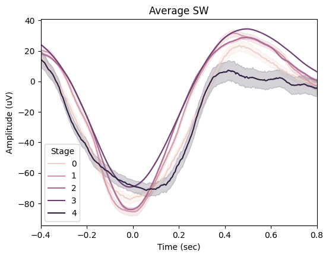
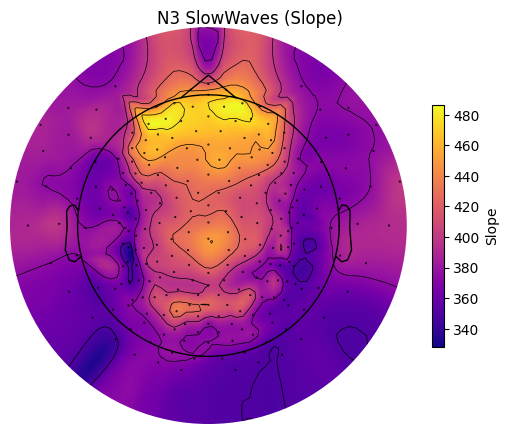
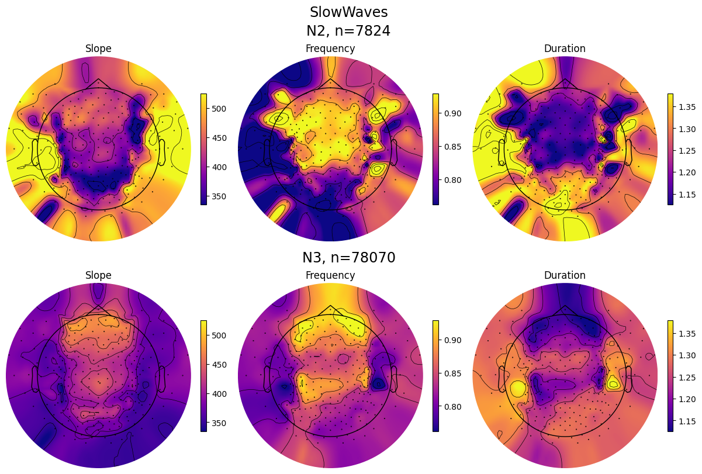

Slow waves analysis#
Intoductory notes:#
This notebook presents slow waves detection functionality.
Recommended reading:
Import module#
from sleepeeg.pipeline import SlowWavesPipe
Spindles detection#
slow_waves_pipe = SlowWavesPipe(
path_to_eeg=r"C:\Users\Gennadiy\Documents\data\HZ4\after_ica_raw.fif",
output_dir=r"C:\Users\Gennadiy\Documents\data\HZ4",
path_to_hypno=r"C:\Users\Gennadiy\Documents\data\HZ4\staging.txt",
hypno_freq=1,
)
Opening raw data file C:\Users\Gennadiy\Documents\data\HZ4\after_ica_raw.fif...
Reading extended channel information
Read a total of 1 projection items:
Average EEG reference (1 x 257) idle
Range : 0 ... 2032249 = 0.000 ... 8128.996 secs
Ready.
Opening raw data file C:\Users\Gennadiy\Documents\data\HZ4\after_ica_raw-1.fif...
Reading extended channel information
Read a total of 1 projection items:
Average EEG reference (1 x 257) idle
Range : 2032250 ... 2229772 = 8129.000 ... 8919.088 secs
Ready.
Hypnogram is LONGER than data by 0.91 seconds. Cropping hypnogram to match data.size.
Please refer to the YASA’s documentation for details about the arguments.
slow_waves_pipe.detect(
picks=["eeg"],
reference="average",
include=(0, 1, 2, 3, 4),
freq_sw=(0.3, 1.5),
dur_neg=(0.3, 1.5),
dur_pos=(0.1, 1),
amp_neg=(40, 200),
amp_pos=(10, 150),
amp_ptp=(75, 350),
coupling=False,
coupling_params={"freq_sp": (12, 16), "p": 0.05, "time": 1},
remove_outliers=False,
verbose=False,
save=True,
)
Reading 0 ... 2229772 = 0.000 ... 8919.088 secs...
EEG channel type selected for re-referencing
Applying average reference.
Applying a custom ('EEG',) reference.
Removing existing average EEG reference projection.
15-Sep-23 15:00:50 | INFO | Number of unique values in hypno = 5
15-Sep-23 15:00:50 | INFO | Number of samples in data = 2229773
15-Sep-23 15:00:50 | INFO | Sampling frequency = 250.00 Hz
15-Sep-23 15:00:50 | INFO | Data duration = 8919.09 seconds
15-Sep-23 15:00:57 | INFO | Trimmed standard deviation of E1 = 14.5162 uV
15-Sep-23 15:00:57 | INFO | Peak-to-peak amplitude of E1 = 3688.5618 uV
15-Sep-23 15:00:57 | INFO | Trimmed standard deviation of E2 = 16.2150 uV
15-Sep-23 15:00:57 | INFO | Peak-to-peak amplitude of E2 = 8828.0429 uV
15-Sep-23 15:00:57 | INFO | Trimmed standard deviation of E3 = 16.1373 uV
15-Sep-23 15:00:57 | INFO | Peak-to-peak amplitude of E3 = 5481.6239 uV
15-Sep-23 15:00:57 | INFO | Trimmed standard deviation of E4 = 16.0685 uV
15-Sep-23 15:00:57 | INFO | Peak-to-peak amplitude of E4 = 5242.0351 uV
15-Sep-23 15:00:57 | INFO | Trimmed standard deviation of E5 = 16.2787 uV
15-Sep-23 15:00:57 | INFO | Peak-to-peak amplitude of E5 = 15585.4875 uV
15-Sep-23 15:00:57 | INFO | Trimmed standard deviation of E6 = 16.0490 uV
15-Sep-23 15:00:57 | INFO | Peak-to-peak amplitude of E6 = 2504.1264 uV
15-Sep-23 15:00:57 | INFO | Trimmed standard deviation of E7 = 15.9837 uV
15-Sep-23 15:00:57 | INFO | Peak-to-peak amplitude of E7 = 3103.2741 uV
15-Sep-23 15:00:57 | INFO | Trimmed standard deviation of E8 = 15.8534 uV
15-Sep-23 15:00:57 | INFO | Peak-to-peak amplitude of E8 = 2719.0035 uV
15-Sep-23 15:00:57 | INFO | Trimmed standard deviation of E9 = 15.5494 uV
15-Sep-23 15:00:57 | INFO | Peak-to-peak amplitude of E9 = 2647.2521 uV
15-Sep-23 15:00:57 | INFO | Trimmed standard deviation of E10 = 18.3994 uV
15-Sep-23 15:00:57 | INFO | Peak-to-peak amplitude of E10 = 11286.5903 uV
15-Sep-23 15:00:57 | INFO | Trimmed standard deviation of E11 = 18.8060 uV
15-Sep-23 15:00:57 | INFO | Peak-to-peak amplitude of E11 = 1905.3396 uV
15-Sep-23 15:00:57 | INFO | Trimmed standard deviation of E12 = 17.9607 uV
15-Sep-23 15:00:57 | INFO | Peak-to-peak amplitude of E12 = 12017.8657 uV
15-Sep-23 15:00:57 | INFO | Trimmed standard deviation of E13 = 16.9738 uV
15-Sep-23 15:00:57 | INFO | Peak-to-peak amplitude of E13 = 3356.5999 uV
15-Sep-23 15:00:57 | INFO | Trimmed standard deviation of E14 = 16.5704 uV
15-Sep-23 15:00:57 | INFO | Peak-to-peak amplitude of E14 = 1509.2135 uV
15-Sep-23 15:00:57 | INFO | Trimmed standard deviation of E15 = 16.3078 uV
15-Sep-23 15:00:57 | INFO | Peak-to-peak amplitude of E15 = 2788.8196 uV
15-Sep-23 15:00:57 | INFO | Trimmed standard deviation of E16 = 15.8427 uV
15-Sep-23 15:00:57 | INFO | Peak-to-peak amplitude of E16 = 5352.4252 uV
15-Sep-23 15:00:57 | INFO | Trimmed standard deviation of E17 = 15.2100 uV
15-Sep-23 15:00:57 | INFO | Peak-to-peak amplitude of E17 = 2430.1007 uV
15-Sep-23 15:00:57 | INFO | Trimmed standard deviation of E18 = 16.9644 uV
15-Sep-23 15:00:57 | INFO | Peak-to-peak amplitude of E18 = 18057.3833 uV
15-Sep-23 15:00:57 | INFO | Trimmed standard deviation of E19 = 19.0677 uV
15-Sep-23 15:00:57 | INFO | Peak-to-peak amplitude of E19 = 16676.1691 uV
15-Sep-23 15:00:57 | INFO | Trimmed standard deviation of E20 = 17.7969 uV
15-Sep-23 15:00:57 | INFO | Peak-to-peak amplitude of E20 = 9345.2838 uV
15-Sep-23 15:00:57 | INFO | Trimmed standard deviation of E21 = 17.0461 uV
15-Sep-23 15:00:57 | INFO | Peak-to-peak amplitude of E21 = 4302.6544 uV
15-Sep-23 15:00:57 | INFO | Trimmed standard deviation of E22 = 16.4745 uV
15-Sep-23 15:00:57 | INFO | Peak-to-peak amplitude of E22 = 1383.1623 uV
15-Sep-23 15:00:57 | INFO | Trimmed standard deviation of E23 = 15.8809 uV
15-Sep-23 15:00:57 | INFO | Peak-to-peak amplitude of E23 = 4239.6793 uV
15-Sep-23 15:00:57 | INFO | Trimmed standard deviation of E24 = 15.7960 uV
15-Sep-23 15:00:57 | INFO | Peak-to-peak amplitude of E24 = 1980.0790 uV
15-Sep-23 15:00:57 | INFO | Trimmed standard deviation of E25 = 17.6153 uV
15-Sep-23 15:00:57 | INFO | Peak-to-peak amplitude of E25 = 9980.4197 uV
15-Sep-23 15:00:57 | INFO | Trimmed standard deviation of E26 = 18.9777 uV
15-Sep-23 15:00:57 | INFO | Peak-to-peak amplitude of E26 = 2216.3140 uV
15-Sep-23 15:00:57 | INFO | Trimmed standard deviation of E27 = 17.6364 uV
15-Sep-23 15:00:57 | INFO | Peak-to-peak amplitude of E27 = 7777.0773 uV
15-Sep-23 15:00:57 | INFO | Trimmed standard deviation of E28 = 17.1237 uV
15-Sep-23 15:00:57 | INFO | Peak-to-peak amplitude of E28 = 6397.3521 uV
15-Sep-23 15:00:57 | INFO | Trimmed standard deviation of E29 = 16.1962 uV
15-Sep-23 15:00:57 | INFO | Peak-to-peak amplitude of E29 = 8417.1236 uV
15-Sep-23 15:00:57 | INFO | Trimmed standard deviation of E30 = 15.9185 uV
15-Sep-23 15:00:57 | INFO | Peak-to-peak amplitude of E30 = 7265.8053 uV
15-Sep-23 15:00:57 | INFO | Trimmed standard deviation of E31 = 16.0001 uV
15-Sep-23 15:00:57 | INFO | Peak-to-peak amplitude of E31 = 21851.1516 uV
15-Sep-23 15:00:57 | INFO | Trimmed standard deviation of E32 = 19.4257 uV
15-Sep-23 15:00:57 | INFO | Peak-to-peak amplitude of E32 = 7807.7674 uV
15-Sep-23 15:00:57 | INFO | Trimmed standard deviation of E33 = 19.0587 uV
15-Sep-23 15:00:57 | INFO | Peak-to-peak amplitude of E33 = 16343.6418 uV
15-Sep-23 15:00:57 | INFO | Trimmed standard deviation of E34 = 18.3883 uV
15-Sep-23 15:00:57 | INFO | Peak-to-peak amplitude of E34 = 10816.3739 uV
15-Sep-23 15:00:57 | INFO | Trimmed standard deviation of E35 = 16.3460 uV
15-Sep-23 15:00:57 | INFO | Peak-to-peak amplitude of E35 = 1178.6447 uV
15-Sep-23 15:00:57 | INFO | Trimmed standard deviation of E36 = 16.0235 uV
15-Sep-23 15:00:57 | INFO | Peak-to-peak amplitude of E36 = 2692.6382 uV
15-Sep-23 15:00:57 | INFO | Trimmed standard deviation of E37 = 17.3363 uV
15-Sep-23 15:00:57 | INFO | Peak-to-peak amplitude of E37 = 1688.2441 uV
15-Sep-23 15:00:57 | INFO | Trimmed standard deviation of E38 = 20.7097 uV
15-Sep-23 15:00:57 | INFO | Peak-to-peak amplitude of E38 = 3457.5251 uV
15-Sep-23 15:00:57 | INFO | Trimmed standard deviation of E39 = 17.5083 uV
15-Sep-23 15:00:57 | INFO | Peak-to-peak amplitude of E39 = 6156.4595 uV
15-Sep-23 15:00:57 | INFO | Trimmed standard deviation of E40 = 15.9997 uV
15-Sep-23 15:00:57 | INFO | Peak-to-peak amplitude of E40 = 7613.2842 uV
15-Sep-23 15:00:57 | INFO | Trimmed standard deviation of E41 = 15.0796 uV
15-Sep-23 15:00:57 | INFO | Peak-to-peak amplitude of E41 = 5674.3706 uV
15-Sep-23 15:00:57 | INFO | Trimmed standard deviation of E42 = 14.7032 uV
15-Sep-23 15:00:57 | INFO | Peak-to-peak amplitude of E42 = 3450.7702 uV
15-Sep-23 15:00:57 | INFO | Trimmed standard deviation of E43 = 14.5106 uV
15-Sep-23 15:00:57 | INFO | Peak-to-peak amplitude of E43 = 1956.4511 uV
15-Sep-23 15:00:57 | INFO | Trimmed standard deviation of E44 = 14.3550 uV
15-Sep-23 15:00:57 | INFO | Peak-to-peak amplitude of E44 = 1426.3160 uV
15-Sep-23 15:00:57 | INFO | Trimmed standard deviation of E45 = 15.1798 uV
15-Sep-23 15:00:57 | INFO | Peak-to-peak amplitude of E45 = 5341.3306 uV
15-Sep-23 15:00:57 | INFO | Trimmed standard deviation of E46 = 16.4217 uV
15-Sep-23 15:00:57 | INFO | Peak-to-peak amplitude of E46 = 2497.8125 uV
15-Sep-23 15:00:57 | INFO | Trimmed standard deviation of E47 = 18.8212 uV
15-Sep-23 15:00:57 | INFO | Peak-to-peak amplitude of E47 = 2845.9266 uV
15-Sep-23 15:00:57 | INFO | Trimmed standard deviation of E48 = 15.8986 uV
15-Sep-23 15:00:57 | INFO | Peak-to-peak amplitude of E48 = 5254.4323 uV
15-Sep-23 15:00:57 | INFO | Trimmed standard deviation of E49 = 14.3403 uV
15-Sep-23 15:00:57 | INFO | Peak-to-peak amplitude of E49 = 8968.4917 uV
15-Sep-23 15:00:57 | INFO | Trimmed standard deviation of E50 = 13.0749 uV
15-Sep-23 15:00:57 | INFO | Peak-to-peak amplitude of E50 = 4292.8464 uV
15-Sep-23 15:00:57 | INFO | Trimmed standard deviation of E51 = 12.6912 uV
15-Sep-23 15:00:57 | INFO | Peak-to-peak amplitude of E51 = 4232.9157 uV
15-Sep-23 15:00:57 | INFO | Trimmed standard deviation of E52 = 12.8501 uV
15-Sep-23 15:00:57 | INFO | Peak-to-peak amplitude of E52 = 3567.5150 uV
15-Sep-23 15:00:57 | INFO | Trimmed standard deviation of E53 = 13.2854 uV
15-Sep-23 15:00:57 | INFO | Peak-to-peak amplitude of E53 = 3811.3596 uV
15-Sep-23 15:00:57 | INFO | Trimmed standard deviation of E54 = 16.3966 uV
15-Sep-23 15:00:57 | INFO | Peak-to-peak amplitude of E54 = 3248.4550 uV
15-Sep-23 15:00:57 | INFO | Trimmed standard deviation of E55 = 15.3049 uV
15-Sep-23 15:00:57 | INFO | Peak-to-peak amplitude of E55 = 5657.8521 uV
15-Sep-23 15:00:57 | INFO | Trimmed standard deviation of E56 = 13.9082 uV
15-Sep-23 15:00:57 | INFO | Peak-to-peak amplitude of E56 = 9641.7103 uV
15-Sep-23 15:00:57 | INFO | Trimmed standard deviation of E57 = 12.4991 uV
15-Sep-23 15:00:57 | INFO | Peak-to-peak amplitude of E57 = 9554.3360 uV
15-Sep-23 15:00:57 | INFO | Trimmed standard deviation of E58 = 11.6550 uV
15-Sep-23 15:00:57 | INFO | Peak-to-peak amplitude of E58 = 7104.4276 uV
15-Sep-23 15:00:57 | INFO | Trimmed standard deviation of E59 = 11.3785 uV
15-Sep-23 15:00:57 | INFO | Peak-to-peak amplitude of E59 = 1621.2853 uV
15-Sep-23 15:00:57 | INFO | Trimmed standard deviation of E60 = 12.4301 uV
15-Sep-23 15:00:57 | INFO | Peak-to-peak amplitude of E60 = 3704.0899 uV
15-Sep-23 15:00:57 | INFO | Trimmed standard deviation of E61 = 13.7801 uV
15-Sep-23 15:00:57 | INFO | Peak-to-peak amplitude of E61 = 6653.4758 uV
15-Sep-23 15:00:57 | INFO | Trimmed standard deviation of E62 = 13.3401 uV
15-Sep-23 15:00:57 | INFO | Peak-to-peak amplitude of E62 = 4522.0353 uV
15-Sep-23 15:00:57 | INFO | Trimmed standard deviation of E63 = 12.3415 uV
15-Sep-23 15:00:57 | INFO | Peak-to-peak amplitude of E63 = 11298.6954 uV
15-Sep-23 15:00:57 | INFO | Trimmed standard deviation of E64 = 10.7806 uV
15-Sep-23 15:00:57 | INFO | Peak-to-peak amplitude of E64 = 6712.1148 uV
15-Sep-23 15:00:57 | INFO | Trimmed standard deviation of E65 = 10.7325 uV
15-Sep-23 15:00:57 | INFO | Peak-to-peak amplitude of E65 = 3896.0039 uV
15-Sep-23 15:00:57 | INFO | Trimmed standard deviation of E66 = 9.9816 uV
15-Sep-23 15:00:57 | INFO | Peak-to-peak amplitude of E66 = 2969.6715 uV
15-Sep-23 15:00:57 | INFO | Trimmed standard deviation of E67 = 12.1032 uV
15-Sep-23 15:00:57 | INFO | Peak-to-peak amplitude of E67 = 3431.9714 uV
15-Sep-23 15:00:57 | INFO | Trimmed standard deviation of E68 = 12.5904 uV
15-Sep-23 15:00:57 | INFO | Peak-to-peak amplitude of E68 = 1520.3804 uV
15-Sep-23 15:00:57 | INFO | Trimmed standard deviation of E69 = 13.5055 uV
15-Sep-23 15:00:57 | INFO | Peak-to-peak amplitude of E69 = 5093.2767 uV
15-Sep-23 15:00:57 | INFO | Trimmed standard deviation of E70 = 12.5760 uV
15-Sep-23 15:00:57 | INFO | Peak-to-peak amplitude of E70 = 1910.0480 uV
15-Sep-23 15:00:57 | INFO | Trimmed standard deviation of E71 = 10.2704 uV
15-Sep-23 15:00:57 | INFO | Peak-to-peak amplitude of E71 = 7615.3306 uV
15-Sep-23 15:00:57 | INFO | Trimmed standard deviation of E72 = 9.9097 uV
15-Sep-23 15:00:57 | INFO | Peak-to-peak amplitude of E72 = 5021.1378 uV
15-Sep-23 15:00:57 | INFO | Trimmed standard deviation of E73 = 11.6106 uV
15-Sep-23 15:00:57 | INFO | Peak-to-peak amplitude of E73 = 9045.3355 uV
15-Sep-23 15:00:57 | INFO | Trimmed standard deviation of E74 = 10.3942 uV
15-Sep-23 15:00:57 | INFO | Peak-to-peak amplitude of E74 = 3147.1416 uV
15-Sep-23 15:00:57 | INFO | Trimmed standard deviation of E75 = 10.0512 uV
15-Sep-23 15:00:57 | INFO | Peak-to-peak amplitude of E75 = 3182.2973 uV
15-Sep-23 15:00:57 | INFO | Trimmed standard deviation of E76 = 10.0098 uV
15-Sep-23 15:00:57 | INFO | Peak-to-peak amplitude of E76 = 3987.9440 uV
15-Sep-23 15:00:57 | INFO | Trimmed standard deviation of E77 = 9.8979 uV
15-Sep-23 15:00:57 | INFO | Peak-to-peak amplitude of E77 = 4870.4576 uV
15-Sep-23 15:00:57 | INFO | Trimmed standard deviation of E78 = 10.7723 uV
15-Sep-23 15:00:57 | INFO | Peak-to-peak amplitude of E78 = 4464.9809 uV
15-Sep-23 15:00:57 | INFO | Trimmed standard deviation of E79 = 12.6047 uV
15-Sep-23 15:00:57 | INFO | Peak-to-peak amplitude of E79 = 5287.0263 uV
15-Sep-23 15:00:57 | INFO | Trimmed standard deviation of E80 = 13.1442 uV
15-Sep-23 15:00:57 | INFO | Peak-to-peak amplitude of E80 = 3628.1397 uV
15-Sep-23 15:00:57 | INFO | Trimmed standard deviation of E81 = 15.6645 uV
15-Sep-23 15:00:57 | INFO | Peak-to-peak amplitude of E81 = 5976.9208 uV
15-Sep-23 15:00:57 | INFO | Trimmed standard deviation of E82 = 11.0123 uV
15-Sep-23 15:00:57 | INFO | Peak-to-peak amplitude of E82 = 7832.2111 uV
15-Sep-23 15:00:57 | INFO | Trimmed standard deviation of E83 = 10.6486 uV
15-Sep-23 15:00:57 | INFO | Peak-to-peak amplitude of E83 = 7487.2297 uV
15-Sep-23 15:00:57 | INFO | Trimmed standard deviation of E84 = 10.0114 uV
15-Sep-23 15:00:57 | INFO | Peak-to-peak amplitude of E84 = 3649.1505 uV
15-Sep-23 15:00:57 | INFO | Trimmed standard deviation of E85 = 10.3490 uV
15-Sep-23 15:00:57 | INFO | Peak-to-peak amplitude of E85 = 5770.4690 uV
15-Sep-23 15:00:57 | INFO | Trimmed standard deviation of E86 = 10.2086 uV
15-Sep-23 15:00:57 | INFO | Peak-to-peak amplitude of E86 = 2796.0522 uV
15-Sep-23 15:00:57 | INFO | Trimmed standard deviation of E87 = 10.6923 uV
15-Sep-23 15:00:57 | INFO | Peak-to-peak amplitude of E87 = 4651.8375 uV
15-Sep-23 15:00:57 | INFO | Trimmed standard deviation of E88 = 12.1586 uV
15-Sep-23 15:00:57 | INFO | Peak-to-peak amplitude of E88 = 2684.9373 uV
15-Sep-23 15:00:57 | INFO | Trimmed standard deviation of E89 = 13.0797 uV
15-Sep-23 15:00:57 | INFO | Peak-to-peak amplitude of E89 = 14509.1837 uV
15-Sep-23 15:00:57 | INFO | Trimmed standard deviation of E90 = 15.0743 uV
15-Sep-23 15:00:57 | INFO | Peak-to-peak amplitude of E90 = 3295.5277 uV
15-Sep-23 15:00:57 | INFO | Trimmed standard deviation of E91 = 9.7433 uV
15-Sep-23 15:00:57 | INFO | Peak-to-peak amplitude of E91 = 10433.0578 uV
15-Sep-23 15:00:57 | INFO | Trimmed standard deviation of E92 = 10.4149 uV
15-Sep-23 15:00:57 | INFO | Peak-to-peak amplitude of E92 = 7431.4327 uV
15-Sep-23 15:00:57 | INFO | Trimmed standard deviation of E93 = 10.8966 uV
15-Sep-23 15:00:57 | INFO | Peak-to-peak amplitude of E93 = 3074.9719 uV
15-Sep-23 15:00:57 | INFO | Trimmed standard deviation of E94 = 10.5630 uV
15-Sep-23 15:00:57 | INFO | Peak-to-peak amplitude of E94 = 4451.6527 uV
15-Sep-23 15:00:57 | INFO | Trimmed standard deviation of E95 = 11.2378 uV
15-Sep-23 15:00:57 | INFO | Peak-to-peak amplitude of E95 = 3794.0936 uV
15-Sep-23 15:00:57 | INFO | Trimmed standard deviation of E96 = 12.3885 uV
15-Sep-23 15:00:57 | INFO | Peak-to-peak amplitude of E96 = 3758.3842 uV
15-Sep-23 15:00:57 | INFO | Trimmed standard deviation of E97 = 11.8305 uV
15-Sep-23 15:00:57 | INFO | Peak-to-peak amplitude of E97 = 6810.9823 uV
15-Sep-23 15:00:57 | INFO | Trimmed standard deviation of E98 = 11.3673 uV
15-Sep-23 15:00:57 | INFO | Peak-to-peak amplitude of E98 = 6102.9209 uV
15-Sep-23 15:00:57 | INFO | Trimmed standard deviation of E99 = 12.5491 uV
15-Sep-23 15:00:57 | INFO | Peak-to-peak amplitude of E99 = 4661.8058 uV
15-Sep-23 15:00:57 | INFO | Trimmed standard deviation of E100 = 13.2147 uV
15-Sep-23 15:00:57 | INFO | Peak-to-peak amplitude of E100 = 2987.6551 uV
15-Sep-23 15:00:57 | INFO | Trimmed standard deviation of E101 = 14.7808 uV
15-Sep-23 15:00:57 | INFO | Peak-to-peak amplitude of E101 = 3978.6068 uV
15-Sep-23 15:00:57 | INFO | Trimmed standard deviation of E102 = 10.7784 uV
15-Sep-23 15:00:57 | INFO | Peak-to-peak amplitude of E102 = 7970.3519 uV
15-Sep-23 15:00:57 | INFO | Trimmed standard deviation of E103 = 10.5010 uV
15-Sep-23 15:00:57 | INFO | Peak-to-peak amplitude of E103 = 7577.9015 uV
15-Sep-23 15:00:57 | INFO | Trimmed standard deviation of E104 = 13.4683 uV
15-Sep-23 15:00:57 | INFO | Peak-to-peak amplitude of E104 = 3320.1819 uV
15-Sep-23 15:00:57 | INFO | Trimmed standard deviation of E105 = 13.5222 uV
15-Sep-23 15:00:57 | INFO | Peak-to-peak amplitude of E105 = 3352.5746 uV
15-Sep-23 15:00:57 | INFO | Trimmed standard deviation of E106 = 14.3852 uV
15-Sep-23 15:00:57 | INFO | Peak-to-peak amplitude of E106 = 4136.8548 uV
15-Sep-23 15:00:57 | INFO | Trimmed standard deviation of E107 = 15.8670 uV
15-Sep-23 15:00:57 | INFO | Peak-to-peak amplitude of E107 = 5218.5267 uV
15-Sep-23 15:00:57 | INFO | Trimmed standard deviation of E108 = 15.0067 uV
15-Sep-23 15:00:57 | INFO | Peak-to-peak amplitude of E108 = 4645.9521 uV
15-Sep-23 15:00:57 | INFO | Trimmed standard deviation of E109 = 14.2666 uV
15-Sep-23 15:00:57 | INFO | Peak-to-peak amplitude of E109 = 4664.2538 uV
15-Sep-23 15:00:57 | INFO | Trimmed standard deviation of E110 = 14.4112 uV
15-Sep-23 15:00:57 | INFO | Peak-to-peak amplitude of E110 = 6933.5320 uV
15-Sep-23 15:00:57 | INFO | Trimmed standard deviation of E111 = 10.9947 uV
15-Sep-23 15:00:57 | INFO | Peak-to-peak amplitude of E111 = 7382.5610 uV
15-Sep-23 15:00:57 | INFO | Trimmed standard deviation of E112 = 13.2513 uV
15-Sep-23 15:00:57 | INFO | Peak-to-peak amplitude of E112 = 3667.9516 uV
15-Sep-23 15:00:57 | INFO | Trimmed standard deviation of E113 = 13.3814 uV
15-Sep-23 15:00:57 | INFO | Peak-to-peak amplitude of E113 = 3378.0396 uV
15-Sep-23 15:00:57 | INFO | Trimmed standard deviation of E114 = 13.9158 uV
15-Sep-23 15:00:57 | INFO | Peak-to-peak amplitude of E114 = 3834.5226 uV
15-Sep-23 15:00:57 | INFO | Trimmed standard deviation of E115 = 15.3341 uV
15-Sep-23 15:00:57 | INFO | Peak-to-peak amplitude of E115 = 4002.8531 uV
15-Sep-23 15:00:57 | INFO | Trimmed standard deviation of E116 = 17.4740 uV
15-Sep-23 15:00:57 | INFO | Peak-to-peak amplitude of E116 = 5609.4812 uV
15-Sep-23 15:00:57 | INFO | Trimmed standard deviation of E117 = 18.0937 uV
15-Sep-23 15:00:57 | INFO | Peak-to-peak amplitude of E117 = 6894.5757 uV
15-Sep-23 15:00:57 | INFO | Trimmed standard deviation of E118 = 17.5435 uV
15-Sep-23 15:00:57 | INFO | Peak-to-peak amplitude of E118 = 6148.5911 uV
15-Sep-23 15:00:57 | INFO | Trimmed standard deviation of E119 = 16.5135 uV
15-Sep-23 15:00:57 | INFO | Peak-to-peak amplitude of E119 = 8178.5709 uV
15-Sep-23 15:00:57 | INFO | Trimmed standard deviation of E120 = 13.4224 uV
15-Sep-23 15:00:57 | INFO | Peak-to-peak amplitude of E120 = 6003.3712 uV
15-Sep-23 15:00:57 | INFO | Trimmed standard deviation of E121 = 13.4301 uV
15-Sep-23 15:00:57 | INFO | Peak-to-peak amplitude of E121 = 5541.6155 uV
15-Sep-23 15:00:57 | INFO | Trimmed standard deviation of E122 = 13.8425 uV
15-Sep-23 15:00:57 | INFO | Peak-to-peak amplitude of E122 = 5450.0351 uV
15-Sep-23 15:00:57 | INFO | Trimmed standard deviation of E123 = 14.7801 uV
15-Sep-23 15:00:57 | INFO | Peak-to-peak amplitude of E123 = 2265.8677 uV
15-Sep-23 15:00:57 | INFO | Trimmed standard deviation of E124 = 14.8230 uV
15-Sep-23 15:00:57 | INFO | Peak-to-peak amplitude of E124 = 2254.5082 uV
15-Sep-23 15:00:57 | INFO | Trimmed standard deviation of E125 = 17.3991 uV
15-Sep-23 15:00:57 | INFO | Peak-to-peak amplitude of E125 = 3884.6707 uV
15-Sep-23 15:00:57 | INFO | Trimmed standard deviation of E126 = 19.1442 uV
15-Sep-23 15:00:57 | INFO | Peak-to-peak amplitude of E126 = 3540.3838 uV
15-Sep-23 15:00:57 | INFO | Trimmed standard deviation of E127 = 18.4899 uV
15-Sep-23 15:00:57 | INFO | Peak-to-peak amplitude of E127 = 4149.1047 uV
15-Sep-23 15:00:57 | INFO | Trimmed standard deviation of E128 = 15.3289 uV
15-Sep-23 15:00:57 | INFO | Peak-to-peak amplitude of E128 = 7983.3321 uV
15-Sep-23 15:00:57 | INFO | Trimmed standard deviation of E129 = 14.3585 uV
15-Sep-23 15:00:57 | INFO | Peak-to-peak amplitude of E129 = 12184.3180 uV
15-Sep-23 15:00:57 | INFO | Trimmed standard deviation of E130 = 13.9268 uV
15-Sep-23 15:00:57 | INFO | Peak-to-peak amplitude of E130 = 6237.4458 uV
15-Sep-23 15:00:57 | INFO | Trimmed standard deviation of E131 = 14.4809 uV
15-Sep-23 15:00:57 | INFO | Peak-to-peak amplitude of E131 = 4380.4131 uV
15-Sep-23 15:00:57 | INFO | Trimmed standard deviation of E132 = 15.3688 uV
15-Sep-23 15:00:57 | INFO | Peak-to-peak amplitude of E132 = 1589.2660 uV
15-Sep-23 15:00:57 | INFO | Trimmed standard deviation of E133 = 13.4894 uV
15-Sep-23 15:00:57 | INFO | Peak-to-peak amplitude of E133 = 3434.4243 uV
15-Sep-23 15:00:57 | INFO | Trimmed standard deviation of E134 = 14.5668 uV
15-Sep-23 15:00:57 | INFO | Peak-to-peak amplitude of E134 = 4017.6093 uV
15-Sep-23 15:00:57 | INFO | Trimmed standard deviation of E135 = 14.2630 uV
15-Sep-23 15:00:57 | INFO | Peak-to-peak amplitude of E135 = 3421.0822 uV
15-Sep-23 15:00:57 | INFO | Trimmed standard deviation of E136 = 14.2586 uV
15-Sep-23 15:00:57 | INFO | Peak-to-peak amplitude of E136 = 2277.7600 uV
15-Sep-23 15:00:57 | INFO | Trimmed standard deviation of E137 = 14.3445 uV
15-Sep-23 15:00:57 | INFO | Peak-to-peak amplitude of E137 = 4272.8287 uV
15-Sep-23 15:00:57 | INFO | Trimmed standard deviation of E138 = 17.8158 uV
15-Sep-23 15:00:57 | INFO | Peak-to-peak amplitude of E138 = 6293.0767 uV
15-Sep-23 15:00:57 | INFO | Trimmed standard deviation of E139 = 18.6847 uV
15-Sep-23 15:00:57 | INFO | Peak-to-peak amplitude of E139 = 4064.2081 uV
15-Sep-23 15:00:57 | INFO | Trimmed standard deviation of E140 = 16.4210 uV
15-Sep-23 15:00:57 | INFO | Peak-to-peak amplitude of E140 = 6448.4911 uV
15-Sep-23 15:00:57 | INFO | Trimmed standard deviation of E141 = 13.8631 uV
15-Sep-23 15:00:57 | INFO | Peak-to-peak amplitude of E141 = 5259.5896 uV
15-Sep-23 15:00:57 | INFO | Trimmed standard deviation of E142 = 13.0733 uV
15-Sep-23 15:00:57 | INFO | Peak-to-peak amplitude of E142 = 6888.7528 uV
15-Sep-23 15:00:57 | INFO | Trimmed standard deviation of E143 = 13.0057 uV
15-Sep-23 15:00:57 | INFO | Peak-to-peak amplitude of E143 = 2805.6742 uV
15-Sep-23 15:00:57 | INFO | Trimmed standard deviation of E144 = 13.7363 uV
15-Sep-23 15:00:57 | INFO | Peak-to-peak amplitude of E144 = 2089.5212 uV
15-Sep-23 15:00:57 | INFO | Trimmed standard deviation of E145 = 12.7196 uV
15-Sep-23 15:00:57 | INFO | Peak-to-peak amplitude of E145 = 3169.7894 uV
15-Sep-23 15:00:57 | INFO | Trimmed standard deviation of E146 = 14.4118 uV
15-Sep-23 15:00:57 | INFO | Peak-to-peak amplitude of E146 = 3446.0999 uV
15-Sep-23 15:00:57 | INFO | Trimmed standard deviation of E147 = 14.4013 uV
15-Sep-23 15:00:57 | INFO | Peak-to-peak amplitude of E147 = 3385.3887 uV
15-Sep-23 15:00:57 | INFO | Trimmed standard deviation of E148 = 13.6158 uV
15-Sep-23 15:00:57 | INFO | Peak-to-peak amplitude of E148 = 1641.5508 uV
15-Sep-23 15:00:57 | INFO | Trimmed standard deviation of E149 = 14.1509 uV
15-Sep-23 15:00:57 | INFO | Peak-to-peak amplitude of E149 = 3697.1816 uV
15-Sep-23 15:00:57 | INFO | Trimmed standard deviation of E150 = 18.6256 uV
15-Sep-23 15:00:57 | INFO | Peak-to-peak amplitude of E150 = 3800.5032 uV
15-Sep-23 15:00:57 | INFO | Trimmed standard deviation of E151 = 18.4979 uV
15-Sep-23 15:00:57 | INFO | Peak-to-peak amplitude of E151 = 6081.6191 uV
15-Sep-23 15:00:57 | INFO | Trimmed standard deviation of E152 = 14.0856 uV
15-Sep-23 15:00:57 | INFO | Peak-to-peak amplitude of E152 = 7563.0291 uV
15-Sep-23 15:00:57 | INFO | Trimmed standard deviation of E153 = 12.2347 uV
15-Sep-23 15:00:57 | INFO | Peak-to-peak amplitude of E153 = 7603.6549 uV
15-Sep-23 15:00:57 | INFO | Trimmed standard deviation of E154 = 11.7999 uV
15-Sep-23 15:00:57 | INFO | Peak-to-peak amplitude of E154 = 4325.1612 uV
15-Sep-23 15:00:57 | INFO | Trimmed standard deviation of E155 = 12.4831 uV
15-Sep-23 15:00:57 | INFO | Peak-to-peak amplitude of E155 = 1772.7947 uV
15-Sep-23 15:00:57 | INFO | Trimmed standard deviation of E156 = 12.6238 uV
15-Sep-23 15:00:57 | INFO | Peak-to-peak amplitude of E156 = 2073.5464 uV
15-Sep-23 15:00:57 | INFO | Trimmed standard deviation of E157 = 13.7609 uV
15-Sep-23 15:00:57 | INFO | Peak-to-peak amplitude of E157 = 3687.1132 uV
15-Sep-23 15:00:57 | INFO | Trimmed standard deviation of E158 = 13.9210 uV
15-Sep-23 15:00:57 | INFO | Peak-to-peak amplitude of E158 = 1634.6426 uV
15-Sep-23 15:00:57 | INFO | Trimmed standard deviation of E159 = 14.0235 uV
15-Sep-23 15:00:57 | INFO | Peak-to-peak amplitude of E159 = 3138.3868 uV
15-Sep-23 15:00:57 | INFO | Trimmed standard deviation of E160 = 15.0729 uV
15-Sep-23 15:00:57 | INFO | Peak-to-peak amplitude of E160 = 2590.0213 uV
15-Sep-23 15:00:57 | INFO | Trimmed standard deviation of E161 = 14.7469 uV
15-Sep-23 15:00:57 | INFO | Peak-to-peak amplitude of E161 = 3757.1975 uV
15-Sep-23 15:00:57 | INFO | Trimmed standard deviation of E162 = 11.9315 uV
15-Sep-23 15:00:57 | INFO | Peak-to-peak amplitude of E162 = 4395.0735 uV
15-Sep-23 15:00:57 | INFO | Trimmed standard deviation of E163 = 10.8204 uV
15-Sep-23 15:00:57 | INFO | Peak-to-peak amplitude of E163 = 4768.6312 uV
15-Sep-23 15:00:57 | INFO | Trimmed standard deviation of E164 = 10.6074 uV
15-Sep-23 15:00:57 | INFO | Peak-to-peak amplitude of E164 = 5915.4420 uV
15-Sep-23 15:00:57 | INFO | Trimmed standard deviation of E165 = 11.9164 uV
15-Sep-23 15:00:57 | INFO | Peak-to-peak amplitude of E165 = 2902.0646 uV
15-Sep-23 15:00:57 | INFO | Trimmed standard deviation of E166 = 12.3098 uV
15-Sep-23 15:00:57 | INFO | Peak-to-peak amplitude of E166 = 1658.2470 uV
15-Sep-23 15:00:57 | INFO | Trimmed standard deviation of E167 = 13.9529 uV
15-Sep-23 15:00:57 | INFO | Peak-to-peak amplitude of E167 = 3595.5032 uV
15-Sep-23 15:00:57 | INFO | Trimmed standard deviation of E168 = 12.2537 uV
15-Sep-23 15:00:57 | INFO | Peak-to-peak amplitude of E168 = 3106.2182 uV
15-Sep-23 15:00:57 | INFO | Trimmed standard deviation of E169 = 14.2798 uV
15-Sep-23 15:00:57 | INFO | Peak-to-peak amplitude of E169 = 2842.0966 uV
15-Sep-23 15:00:57 | INFO | Trimmed standard deviation of E170 = 15.2952 uV
15-Sep-23 15:00:57 | INFO | Peak-to-peak amplitude of E170 = 5227.5096 uV
15-Sep-23 15:00:57 | INFO | Trimmed standard deviation of E171 = 11.0336 uV
15-Sep-23 15:00:57 | INFO | Peak-to-peak amplitude of E171 = 2293.2568 uV
15-Sep-23 15:00:57 | INFO | Trimmed standard deviation of E172 = 9.7916 uV
15-Sep-23 15:00:57 | INFO | Peak-to-peak amplitude of E172 = 5193.1347 uV
15-Sep-23 15:00:57 | INFO | Trimmed standard deviation of E173 = 9.7423 uV
15-Sep-23 15:00:57 | INFO | Peak-to-peak amplitude of E173 = 7201.9826 uV
15-Sep-23 15:00:57 | INFO | Trimmed standard deviation of E174 = 11.8011 uV
15-Sep-23 15:00:57 | INFO | Peak-to-peak amplitude of E174 = 3149.5872 uV
15-Sep-23 15:00:57 | INFO | Trimmed standard deviation of E175 = 12.1522 uV
15-Sep-23 15:00:57 | INFO | Peak-to-peak amplitude of E175 = 1824.7068 uV
15-Sep-23 15:00:57 | INFO | Trimmed standard deviation of E176 = 12.3516 uV
15-Sep-23 15:00:57 | INFO | Peak-to-peak amplitude of E176 = 4887.1080 uV
15-Sep-23 15:00:57 | INFO | Trimmed standard deviation of E177 = 11.9590 uV
15-Sep-23 15:00:57 | INFO | Peak-to-peak amplitude of E177 = 2214.7753 uV
15-Sep-23 15:00:57 | INFO | Trimmed standard deviation of E178 = 12.2763 uV
15-Sep-23 15:00:57 | INFO | Peak-to-peak amplitude of E178 = 2048.3338 uV
15-Sep-23 15:00:57 | INFO | Trimmed standard deviation of E179 = 12.0937 uV
15-Sep-23 15:00:57 | INFO | Peak-to-peak amplitude of E179 = 7090.5328 uV
15-Sep-23 15:00:57 | INFO | Trimmed standard deviation of E180 = 9.4215 uV
15-Sep-23 15:00:57 | INFO | Peak-to-peak amplitude of E180 = 8986.4028 uV
15-Sep-23 15:00:57 | INFO | Trimmed standard deviation of E181 = 9.1242 uV
15-Sep-23 15:00:57 | INFO | Peak-to-peak amplitude of E181 = 3868.3128 uV
15-Sep-23 15:00:57 | INFO | Trimmed standard deviation of E182 = 9.9814 uV
15-Sep-23 15:00:57 | INFO | Peak-to-peak amplitude of E182 = 5248.5543 uV
15-Sep-23 15:00:57 | INFO | Trimmed standard deviation of E183 = 11.3399 uV
15-Sep-23 15:00:57 | INFO | Peak-to-peak amplitude of E183 = 3598.4657 uV
15-Sep-23 15:00:57 | INFO | Trimmed standard deviation of E184 = 12.8777 uV
15-Sep-23 15:00:57 | INFO | Peak-to-peak amplitude of E184 = 1352.3525 uV
15-Sep-23 15:00:57 | INFO | Trimmed standard deviation of E185 = 14.2084 uV
15-Sep-23 15:00:57 | INFO | Peak-to-peak amplitude of E185 = 2275.6316 uV
15-Sep-23 15:00:57 | INFO | Trimmed standard deviation of E186 = 15.3468 uV
15-Sep-23 15:00:57 | INFO | Peak-to-peak amplitude of E186 = 1289.0162 uV
15-Sep-23 15:00:57 | INFO | Trimmed standard deviation of E187 = 11.6149 uV
15-Sep-23 15:00:57 | INFO | Peak-to-peak amplitude of E187 = 6313.4677 uV
15-Sep-23 15:00:57 | INFO | Trimmed standard deviation of E188 = 11.8919 uV
15-Sep-23 15:00:57 | INFO | Peak-to-peak amplitude of E188 = 2415.8729 uV
15-Sep-23 15:00:57 | INFO | Trimmed standard deviation of E189 = 11.8717 uV
15-Sep-23 15:00:57 | INFO | Peak-to-peak amplitude of E189 = 2124.3100 uV
15-Sep-23 15:00:57 | INFO | Trimmed standard deviation of E190 = 12.2044 uV
15-Sep-23 15:00:57 | INFO | Peak-to-peak amplitude of E190 = 2060.4188 uV
15-Sep-23 15:00:57 | INFO | Trimmed standard deviation of E191 = 11.8974 uV
15-Sep-23 15:00:57 | INFO | Peak-to-peak amplitude of E191 = 3577.9706 uV
15-Sep-23 15:00:57 | INFO | Trimmed standard deviation of E192 = 10.5976 uV
15-Sep-23 15:00:57 | INFO | Peak-to-peak amplitude of E192 = 5172.8379 uV
15-Sep-23 15:00:57 | INFO | Trimmed standard deviation of E193 = 9.5006 uV
15-Sep-23 15:00:57 | INFO | Peak-to-peak amplitude of E193 = 2836.4670 uV
15-Sep-23 15:00:57 | INFO | Trimmed standard deviation of E194 = 9.6338 uV
15-Sep-23 15:00:57 | INFO | Peak-to-peak amplitude of E194 = 2777.5527 uV
15-Sep-23 15:00:57 | INFO | Trimmed standard deviation of E195 = 10.7180 uV
15-Sep-23 15:00:57 | INFO | Peak-to-peak amplitude of E195 = 5356.4543 uV
15-Sep-23 15:00:57 | INFO | Trimmed standard deviation of E196 = 12.5078 uV
15-Sep-23 15:00:57 | INFO | Peak-to-peak amplitude of E196 = 2864.2322 uV
15-Sep-23 15:00:57 | INFO | Trimmed standard deviation of E197 = 13.6797 uV
15-Sep-23 15:00:57 | INFO | Peak-to-peak amplitude of E197 = 22001.7739 uV
15-Sep-23 15:00:57 | INFO | Trimmed standard deviation of E198 = 14.9967 uV
15-Sep-23 15:00:57 | INFO | Peak-to-peak amplitude of E198 = 5686.2826 uV
15-Sep-23 15:00:57 | INFO | Trimmed standard deviation of E199 = 11.9607 uV
15-Sep-23 15:00:57 | INFO | Peak-to-peak amplitude of E199 = 24930.0133 uV
15-Sep-23 15:00:57 | INFO | Trimmed standard deviation of E200 = 12.0488 uV
15-Sep-23 15:00:57 | INFO | Peak-to-peak amplitude of E200 = 3793.0323 uV
15-Sep-23 15:00:57 | INFO | Trimmed standard deviation of E201 = 11.9184 uV
15-Sep-23 15:00:57 | INFO | Peak-to-peak amplitude of E201 = 5112.3928 uV
15-Sep-23 15:00:57 | INFO | Trimmed standard deviation of E202 = 11.4738 uV
15-Sep-23 15:00:57 | INFO | Peak-to-peak amplitude of E202 = 3030.6176 uV
15-Sep-23 15:00:57 | INFO | Trimmed standard deviation of E203 = 10.2549 uV
15-Sep-23 15:00:57 | INFO | Peak-to-peak amplitude of E203 = 6975.2246 uV
15-Sep-23 15:00:57 | INFO | Trimmed standard deviation of E204 = 10.7318 uV
15-Sep-23 15:00:57 | INFO | Peak-to-peak amplitude of E204 = 2404.6019 uV
15-Sep-23 15:00:57 | INFO | Trimmed standard deviation of E205 = 10.7349 uV
15-Sep-23 15:00:57 | INFO | Peak-to-peak amplitude of E205 = 1590.4035 uV
15-Sep-23 15:00:57 | INFO | Trimmed standard deviation of E206 = 13.5258 uV
15-Sep-23 15:00:57 | INFO | Peak-to-peak amplitude of E206 = 15826.5131 uV
15-Sep-23 15:00:57 | INFO | Trimmed standard deviation of E207 = 14.6121 uV
15-Sep-23 15:00:57 | INFO | Peak-to-peak amplitude of E207 = 10530.9001 uV
15-Sep-23 15:00:57 | INFO | Trimmed standard deviation of E208 = 11.9742 uV
15-Sep-23 15:00:57 | INFO | Peak-to-peak amplitude of E208 = 2989.9633 uV
15-Sep-23 15:00:57 | INFO | Trimmed standard deviation of E209 = 11.2508 uV
15-Sep-23 15:00:57 | INFO | Peak-to-peak amplitude of E209 = 13826.1141 uV
15-Sep-23 15:00:57 | INFO | Trimmed standard deviation of E210 = 11.0886 uV
15-Sep-23 15:00:57 | INFO | Peak-to-peak amplitude of E210 = 11173.1907 uV
15-Sep-23 15:00:57 | INFO | Trimmed standard deviation of E211 = 12.2875 uV
15-Sep-23 15:00:57 | INFO | Peak-to-peak amplitude of E211 = 11053.4870 uV
15-Sep-23 15:00:57 | INFO | Trimmed standard deviation of E212 = 12.0643 uV
15-Sep-23 15:00:57 | INFO | Peak-to-peak amplitude of E212 = 6961.0182 uV
15-Sep-23 15:00:57 | INFO | Trimmed standard deviation of E213 = 12.6145 uV
15-Sep-23 15:00:57 | INFO | Peak-to-peak amplitude of E213 = 3367.6632 uV
15-Sep-23 15:00:57 | INFO | Trimmed standard deviation of E214 = 13.0492 uV
15-Sep-23 15:00:57 | INFO | Peak-to-peak amplitude of E214 = 7405.8902 uV
15-Sep-23 15:00:57 | INFO | Trimmed standard deviation of E215 = 15.2711 uV
15-Sep-23 15:00:57 | INFO | Peak-to-peak amplitude of E215 = 17273.1062 uV
15-Sep-23 15:00:57 | INFO | Trimmed standard deviation of E216 = 10.5350 uV
15-Sep-23 15:00:57 | INFO | Peak-to-peak amplitude of E216 = 23574.6487 uV
15-Sep-23 15:00:57 | INFO | Trimmed standard deviation of E217 = 10.5208 uV
15-Sep-23 15:00:57 | INFO | Peak-to-peak amplitude of E217 = 21121.8918 uV
15-Sep-23 15:00:57 | INFO | Trimmed standard deviation of E218 = 10.7178 uV
15-Sep-23 15:00:57 | INFO | Peak-to-peak amplitude of E218 = 15004.7097 uV
15-Sep-23 15:00:57 | INFO | Trimmed standard deviation of E219 = 11.2930 uV
15-Sep-23 15:00:57 | INFO | Peak-to-peak amplitude of E219 = 8160.1349 uV
15-Sep-23 15:00:57 | INFO | Trimmed standard deviation of E220 = 12.3280 uV
15-Sep-23 15:00:57 | INFO | Peak-to-peak amplitude of E220 = 2963.8127 uV
15-Sep-23 15:00:57 | INFO | Trimmed standard deviation of E221 = 13.9093 uV
15-Sep-23 15:00:57 | INFO | Peak-to-peak amplitude of E221 = 4492.3446 uV
15-Sep-23 15:00:57 | INFO | Trimmed standard deviation of E222 = 13.7101 uV
15-Sep-23 15:00:57 | INFO | Peak-to-peak amplitude of E222 = 5792.0844 uV
15-Sep-23 15:00:57 | INFO | Trimmed standard deviation of E223 = 15.1201 uV
15-Sep-23 15:00:57 | INFO | Peak-to-peak amplitude of E223 = 1665.0884 uV
15-Sep-23 15:00:57 | INFO | Trimmed standard deviation of E224 = 15.2817 uV
15-Sep-23 15:00:57 | INFO | Peak-to-peak amplitude of E224 = 15693.3118 uV
15-Sep-23 15:00:57 | INFO | Trimmed standard deviation of E225 = 11.9067 uV
15-Sep-23 15:00:57 | INFO | Peak-to-peak amplitude of E225 = 7316.2784 uV
15-Sep-23 15:00:57 | INFO | Trimmed standard deviation of E226 = 12.5281 uV
15-Sep-23 15:00:57 | INFO | Peak-to-peak amplitude of E226 = 32392.9269 uV
15-Sep-23 15:00:57 | INFO | Trimmed standard deviation of E227 = 11.7846 uV
15-Sep-23 15:00:57 | INFO | Peak-to-peak amplitude of E227 = 3278.3643 uV
15-Sep-23 15:00:57 | INFO | Trimmed standard deviation of E228 = 11.1187 uV
15-Sep-23 15:00:57 | INFO | Peak-to-peak amplitude of E228 = 12135.5212 uV
15-Sep-23 15:00:57 | INFO | Trimmed standard deviation of E229 = 10.2818 uV
15-Sep-23 15:00:57 | INFO | Peak-to-peak amplitude of E229 = 26605.9830 uV
15-Sep-23 15:00:57 | INFO | Trimmed standard deviation of E230 = 12.0878 uV
15-Sep-23 15:00:57 | INFO | Peak-to-peak amplitude of E230 = 12791.7121 uV
15-Sep-23 15:00:57 | INFO | Trimmed standard deviation of E231 = 11.7358 uV
15-Sep-23 15:00:57 | INFO | Peak-to-peak amplitude of E231 = 16318.5330 uV
15-Sep-23 15:00:57 | INFO | Trimmed standard deviation of E232 = 11.2105 uV
15-Sep-23 15:00:57 | INFO | Peak-to-peak amplitude of E232 = 1388.9151 uV
15-Sep-23 15:00:57 | INFO | Trimmed standard deviation of E233 = 11.2788 uV
15-Sep-23 15:00:57 | INFO | Peak-to-peak amplitude of E233 = 11671.5504 uV
15-Sep-23 15:00:57 | INFO | Trimmed standard deviation of E234 = 12.2374 uV
15-Sep-23 15:00:57 | INFO | Peak-to-peak amplitude of E234 = 342367.6306 uV
15-Sep-23 15:00:57 | INFO | Trimmed standard deviation of E235 = 12.1299 uV
15-Sep-23 15:00:57 | INFO | Peak-to-peak amplitude of E235 = 14002.2698 uV
15-Sep-23 15:00:57 | INFO | Trimmed standard deviation of E236 = 11.7167 uV
15-Sep-23 15:00:57 | INFO | Peak-to-peak amplitude of E236 = 1468.1704 uV
15-Sep-23 15:00:57 | INFO | Trimmed standard deviation of E237 = 11.9647 uV
15-Sep-23 15:00:57 | INFO | Peak-to-peak amplitude of E237 = 5782.1215 uV
15-Sep-23 15:00:57 | INFO | Trimmed standard deviation of E238 = 12.2504 uV
15-Sep-23 15:00:57 | INFO | Peak-to-peak amplitude of E238 = 7921.1504 uV
15-Sep-23 15:00:57 | INFO | Trimmed standard deviation of E239 = 11.9730 uV
15-Sep-23 15:00:57 | INFO | Peak-to-peak amplitude of E239 = 7689.7552 uV
15-Sep-23 15:00:57 | INFO | Trimmed standard deviation of E240 = 11.8708 uV
15-Sep-23 15:00:57 | INFO | Peak-to-peak amplitude of E240 = 7175.9320 uV
15-Sep-23 15:00:57 | INFO | Trimmed standard deviation of E241 = 11.9617 uV
15-Sep-23 15:00:57 | INFO | Peak-to-peak amplitude of E241 = 9112.3072 uV
15-Sep-23 15:00:57 | INFO | Trimmed standard deviation of E242 = 11.9201 uV
15-Sep-23 15:00:57 | INFO | Peak-to-peak amplitude of E242 = 5406.1009 uV
15-Sep-23 15:00:57 | INFO | Trimmed standard deviation of E243 = 11.9375 uV
15-Sep-23 15:00:57 | INFO | Peak-to-peak amplitude of E243 = 5504.1561 uV
15-Sep-23 15:00:57 | INFO | Trimmed standard deviation of E244 = 12.1722 uV
15-Sep-23 15:00:57 | INFO | Peak-to-peak amplitude of E244 = 10538.7781 uV
15-Sep-23 15:00:57 | INFO | Trimmed standard deviation of E245 = 12.1783 uV
15-Sep-23 15:00:57 | INFO | Peak-to-peak amplitude of E245 = 2301.0787 uV
15-Sep-23 15:00:57 | INFO | Trimmed standard deviation of E246 = 12.0007 uV
15-Sep-23 15:00:57 | INFO | Peak-to-peak amplitude of E246 = 5076.9746 uV
15-Sep-23 15:00:57 | INFO | Trimmed standard deviation of E247 = 11.9620 uV
15-Sep-23 15:00:57 | INFO | Peak-to-peak amplitude of E247 = 4413.7014 uV
15-Sep-23 15:00:57 | INFO | Trimmed standard deviation of E248 = 12.1964 uV
15-Sep-23 15:00:57 | INFO | Peak-to-peak amplitude of E248 = 16300.6852 uV
15-Sep-23 15:00:57 | INFO | Trimmed standard deviation of E249 = 12.1535 uV
15-Sep-23 15:00:57 | INFO | Peak-to-peak amplitude of E249 = 6866.3381 uV
15-Sep-23 15:00:57 | INFO | Trimmed standard deviation of E250 = 11.9401 uV
15-Sep-23 15:00:57 | INFO | Peak-to-peak amplitude of E250 = 13396.2311 uV
15-Sep-23 15:00:57 | INFO | Trimmed standard deviation of E251 = 11.0128 uV
15-Sep-23 15:00:57 | INFO | Peak-to-peak amplitude of E251 = 9773.6562 uV
15-Sep-23 15:00:57 | INFO | Trimmed standard deviation of E252 = 14.6714 uV
15-Sep-23 15:00:57 | INFO | Peak-to-peak amplitude of E252 = 15531.0409 uV
15-Sep-23 15:00:57 | INFO | Trimmed standard deviation of E253 = 13.1381 uV
15-Sep-23 15:00:57 | INFO | Peak-to-peak amplitude of E253 = 4369.0368 uV
15-Sep-23 15:00:57 | INFO | Trimmed standard deviation of E254 = 11.6208 uV
15-Sep-23 15:00:57 | INFO | Peak-to-peak amplitude of E254 = 5826.8667 uV
15-Sep-23 15:00:57 | INFO | Trimmed standard deviation of E255 = 10.9111 uV
15-Sep-23 15:00:57 | INFO | Peak-to-peak amplitude of E255 = 2718.4299 uV
15-Sep-23 15:00:57 | INFO | Trimmed standard deviation of E256 = 11.0412 uV
15-Sep-23 15:00:57 | INFO | Peak-to-peak amplitude of E256 = 13857.5760 uV
15-Sep-23 15:00:57 | INFO | Trimmed standard deviation of VREF = 15.3334 uV
15-Sep-23 15:00:57 | INFO | Peak-to-peak amplitude of VREF = 1266.6202 uV
[Parallel(n_jobs=1)]: Done 17 tasks | elapsed: 0.5s
[Parallel(n_jobs=1)]: Done 71 tasks | elapsed: 2.5s
[Parallel(n_jobs=1)]: Done 161 tasks | elapsed: 5.8s
Please refer to the YASA’s documentation for details about the arguments.
slow_waves_pipe.results.summary(
grp_chan=False, grp_stage=True, mask=None, aggfunc="mean", sort=True
)
| Count | Density | Duration | ValNegPeak | ValPosPeak | PTP | Slope | Frequency | |
|---|---|---|---|---|---|---|---|---|
| Stage | ||||||||
| 0 | 2329 | 131.943212 | 1.477807 | -80.511147 | 54.811850 | 135.322998 | 406.946887 | 0.743096 |
| 1 | 1282 | 197.230769 | 1.213073 | -74.935751 | 48.445399 | 123.381150 | 447.816637 | 0.883879 |
| 2 | 7824 | 119.450382 | 1.227901 | -70.057575 | 43.481360 | 113.538935 | 408.784250 | 0.863237 |
| 3 | 78070 | 1881.204819 | 1.231356 | -63.600864 | 49.985412 | 113.586275 | 409.571544 | 0.856829 |
| 4 | 308 | 17.600000 | 1.498948 | -70.945321 | 47.948955 | 118.894276 | 335.520558 | 0.728133 |
slow_waves_pipe.plot_average(
save=True,
center="NegPeak",
hue="Stage",
time_before=0.4,
time_after=0.8,
filt=(None, None),
mask=None,
)

slow_waves_pipe.plot_topomap(
prop="Slope", # Any of the event properties returned by pipe.results.summary().
stage="N3", # Stage to plot the topomap for.
aggfunc="mean", # Aggregation function for channel grouping.
# Should contain at least index of the provided "stage".
sleep_stages={"Wake": 0, "N1": 1, "N2": 2, "N3": 3, "REM": 4},
axis=None, # Whether to plot on provided matplotlib axis.
save=True, # Whether to save the plot as a file.
topomap_args=dict(cmap="plasma"), # Arguments passed to mne.viz.plot_topomap().
cbar_args=None, # Arguments passed to plt.colorbar().
)

slow_waves_pipe.plot_topomap_collage(
# Some of the event properties returned by pipe.results.summary().
props=["Slope", "Frequency", "Duration"],
aggfunc="mean", # Aggregation function for channel grouping.
# Tuple of strs or "all", e.g., ("N1", "REM") or "all" (plots all "sleep_stages").
stages_to_plot="all",
# Should contain at least indices of the provided "stages_to_plot".
sleep_stages={"N2": 2, "N3": 3},
low_percentile=5, # Set min color value by percentile of the property data.
high_percentile=95, # Set max color value by percentile of the property data.
fig=None, # Instance of plt.Figure, a new fig will be created if None.
save=True, # Whether to save the plot as a file.
topomap_args=dict(cmap="plasma"), # Arguments passed to mne.viz.plot_topomap().
cbar_args=None, # Arguments passed to plt.colorbar().
)

Constructs MNE AverageTFR object for every available sleep stage.
slow_waves_pipe.apply_tfr(
freqs=(0.5, 5), # Interval of frequencies of interest.
n_freqs=100, # TFR frequency resolution.
time_before=4, # Time in sec before the peak to use in TFR computation. Should be positive.
time_after=4, # Time in sec after the peak to use in TFR computation.
method="morlet", # TFR method: 'morlet' or 'multitaper'.
save=True, # Whether to save AverageTFR object per sleep stage as hdf5 file.
overwrite=False, # Whether to overwrite existings files.
n_cycles=2,
)
slow_waves_pipe.tfrs
100%|██████████| 257/257 [07:38<00:00, 1.78s/it]
100%|██████████| 97/97 [00:03<00:00, 24.28it/s]
100%|██████████| 256/256 [00:49<00:00, 5.12it/s]
100%|██████████| 250/250 [00:12<00:00, 19.57it/s]
100%|██████████| 257/257 [00:18<00:00, 13.79it/s]
{'N3': <AverageTFR | time : [-4.000000, 4.000000], freq : [0.500000, 5.000000], nave : 303, channels : 257, ~392.6 MB>,
'REM': <AverageTFR | time : [-4.000000, 4.000000], freq : [0.500000, 5.000000], nave : 3, channels : 97, ~148.3 MB>,
'N2': <AverageTFR | time : [-4.000000, 4.000000], freq : [0.500000, 5.000000], nave : 30, channels : 256, ~391.1 MB>,
'N1': <AverageTFR | time : [-4.000000, 4.000000], freq : [0.500000, 5.000000], nave : 5, channels : 250, ~381.9 MB>,
'Wake': <AverageTFR | time : [-4.000000, 4.000000], freq : [0.500000, 5.000000], nave : 9, channels : 257, ~392.6 MB>}
slow_waves_pipe.tfrs["N2"].data
array([[[ 3404.65724757, 3440.74834113, 3477.07558149, ...,
23568.42338948, 23425.46633025, 23282.42737751],
[ 2836.38762693, 2868.46055931, 2900.76422698, ...,
19888.62528315, 19778.24889273, 19667.50161364],
[ 2388.6378046 , 2416.8501116 , 2445.27747145, ...,
17308.87099101, 17227.40958121, 17145.18155751],
...,
[ 2070.11340657, 2189.04555608, 2298.93707451, ...,
7352.50356372, 7148.56901076, 6897.4150568 ],
[ 2064.32677706, 2185.07530504, 2296.81045014, ...,
7315.67508099, 7111.06186175, 6858.56113553],
[ 2058.09676101, 2180.61557957, 2294.15262059, ...,
7279.65637781, 7074.2778563 , 6820.35726529]],
[[15893.16021206, 16019.58034116, 16146.12850867, ...,
46772.79807996, 46412.64194844, 46052.80515214],
[15095.52780212, 15226.12790355, 15356.84272971, ...,
43101.78120154, 42744.56946024, 42387.61568409],
[14425.52599923, 14561.52124701, 14697.65376197, ...,
39879.36842287, 39526.86009796, 39174.49662564],
...,
[ 2798.83811277, 2963.71807043, 3119.1366402 , ...,
3642.21265584, 3478.81996389, 3302.30594723],
[ 2776.42037273, 2941.671674 , 3097.38843501, ...,
3609.2790111 , 3446.7894094 , 3270.91693462],
[ 2754.25008484, 2919.86065263, 3075.8649278 , ...,
3577.15908696, 3415.53703123, 3240.27179077]],
[[14180.24460118, 14298.01461411, 14416.01514324, ...,
22555.11268147, 22339.01808754, 22123.87539275],
[13452.07414409, 13571.96698965, 13692.0189918 , ...,
21572.85389213, 21344.59316388, 21117.52372496],
[12968.20681226, 13094.1178935 , 13220.17845816, ...,
20594.25283435, 20356.48208993, 20120.14920142],
...,
[ 1787.62004605, 1929.44484616, 2072.39961458, ...,
3280.27919614, 3116.3559221 , 2945.14364144],
[ 1766.44984125, 1907.77092613, 2050.23897444, ...,
3251.16461137, 3088.25978059, 2917.86559564],
[ 1745.6818358 , 1886.49222085, 2028.46527994, ...,
3222.71963653, 3060.81983112, 2891.22835746]],
...,
[[ 7284.49431936, 7349.28976191, 7414.24323454, ...,
10314.24043924, 10256.50150614, 10198.50571456],
[ 6835.80223773, 6903.42280432, 6971.25646662, ...,
10349.85828182, 10288.62273399, 10226.98397995],
[ 6369.76928076, 6438.92838817, 6508.3526211 , ...,
10532.2106634 , 10463.70519255, 10394.68255573],
...,
[ 627.93019895, 669.66913654, 712.21329397, ...,
1547.22797516, 1477.24216709, 1402.09102975],
[ 625.39889621, 666.87915827, 709.10283188, ...,
1535.12651314, 1465.23895532, 1390.13503275],
[ 623.02171345, 664.25246976, 706.16373372, ...,
1523.16255908, 1453.39084953, 1378.34892908]],
[[ 4032.43963981, 4068.70825794, 4105.06933171, ...,
9615.85638451, 9550.22889876, 9484.61652253],
[ 3915.40083564, 3954.81772105, 3994.36584899, ...,
9142.35420113, 9079.01743963, 9015.57488799],
[ 3769.78518064, 3811.81579461, 3854.01916963, ...,
8874.87198861, 8811.2200542 , 8747.34951885],
...,
[ 590.41425992, 627.82564872, 665.08615885, ...,
1675.90910644, 1588.1089761 , 1496.70094049],
[ 590.37776786, 627.87146527, 665.15655438, ...,
1658.99551542, 1571.59094826, 1480.54134259],
[ 590.37076647, 627.94950528, 665.26098558, ...,
1642.3422107 , 1555.34870806, 1464.67005379]],
[[10467.21429159, 10546.6781005 , 10626.24216783, ...,
13268.56188218, 13159.30259315, 13050.29544606],
[10144.95308896, 10228.43011308, 10311.99556005, ...,
12773.52963723, 12658.51415384, 12543.78515839],
[ 9824.16154261, 9911.63069013, 9999.18567614, ...,
12314.53688254, 12193.77666901, 12073.34704434],
...,
[ 2737.16335331, 2914.94343076, 3088.07616828, ...,
1994.81944029, 1877.62959983, 1759.1004412 ],
[ 2715.39858273, 2892.99525099, 3065.81283806, ...,
1978.87727963, 1862.16354995, 1744.01831764],
[ 2693.97900184, 2871.3861295 , 3043.88035597, ...,
1963.30324473, 1847.05935362, 1729.29052355]]])
slow_waves_pipe.tfrs["N2"].to_data_frame()
| time | freq | E1 | E10 | E100 | E101 | E102 | E103 | E104 | E105 | ... | E91 | E92 | E93 | E94 | E95 | E96 | E97 | E98 | E99 | VREF | |
|---|---|---|---|---|---|---|---|---|---|---|---|---|---|---|---|---|---|---|---|---|---|
| 0 | -4.000 | 0.5 | 3404.657248 | 15893.160212 | 14180.244601 | 15469.631406 | 13628.602991 | 10487.254346 | 11445.330572 | 14082.192897 | ... | 5602.458963 | 2807.332079 | 8360.833743 | 8359.978545 | 3777.341718 | 7952.066913 | 5634.702277 | 7284.494319 | 4032.439640 | 10467.214292 |
| 1 | -3.996 | 0.5 | 3440.748341 | 16019.580341 | 14298.014614 | 15598.982508 | 13745.414272 | 10569.443206 | 11532.854285 | 14178.853129 | ... | 5643.320877 | 2818.689099 | 8422.688524 | 8432.745423 | 3800.995204 | 8010.363874 | 5688.677499 | 7349.289762 | 4068.708258 | 10546.678101 |
| 2 | -3.992 | 0.5 | 3477.075581 | 16146.128509 | 14416.015143 | 15728.608412 | 13862.526473 | 10651.792690 | 11620.494968 | 14275.471610 | ... | 5684.235045 | 2829.942791 | 8484.487826 | 8505.646750 | 3824.580783 | 8068.601426 | 5742.802636 | 7414.243235 | 4105.069332 | 10626.242168 |
| 3 | -3.988 | 0.5 | 3513.638512 | 16272.794009 | 14534.238941 | 15858.501584 | 13979.931967 | 10734.298867 | 11708.247557 | 14372.041536 | ... | 5725.199594 | 2841.092904 | 8546.224873 | 8578.675532 | 3848.096033 | 8126.772273 | 5797.072140 | 7479.349188 | 4141.519791 | 10705.901948 |
| 4 | -3.984 | 0.5 | 3550.436553 | 16399.566230 | 14652.678492 | 15988.654458 | 14097.623061 | 10816.957799 | 11796.106999 | 14468.556143 | ... | 5766.212645 | 2852.139283 | 8607.892902 | 8651.824764 | 3871.538467 | 8184.869165 | 5851.480410 | 7544.602022 | 4178.056544 | 10785.652929 |
| ... | ... | ... | ... | ... | ... | ... | ... | ... | ... | ... | ... | ... | ... | ... | ... | ... | ... | ... | ... | ... | ... |
| 200095 | 3.984 | 5.0 | 7525.579927 | 3850.569925 | 3517.477490 | 3877.756543 | 3722.031063 | 3271.566235 | 3279.268295 | 3095.459771 | ... | 1596.992147 | 1839.257039 | 2492.447806 | 2377.722775 | 1606.049212 | 1152.285513 | 1197.061942 | 1643.353394 | 1801.440276 | 2187.949450 |
| 200096 | 3.988 | 5.0 | 7431.407279 | 3722.826508 | 3375.380272 | 3731.222067 | 3589.122640 | 3147.217155 | 3150.672947 | 2976.024108 | ... | 1564.615867 | 1741.836395 | 2405.876226 | 2283.210663 | 1587.935081 | 1114.535586 | 1171.649440 | 1586.749539 | 1724.673535 | 2077.185690 |
| 200097 | 3.992 | 5.0 | 7279.656378 | 3577.159087 | 3222.719637 | 3570.844595 | 3441.442268 | 3010.627662 | 3010.293229 | 2844.847850 | ... | 1521.953452 | 1638.709988 | 2308.982746 | 2179.655520 | 1559.663005 | 1071.381564 | 1139.214533 | 1523.162559 | 1642.342211 | 1963.303245 |
| 200098 | 3.996 | 5.0 | 7074.277856 | 3415.537031 | 3060.819831 | 3398.250162 | 3280.645544 | 2863.343343 | 2859.709494 | 2703.484863 | ... | 1469.805747 | 1531.544670 | 2202.907074 | 2068.426747 | 1521.368529 | 1023.404349 | 1100.211968 | 1453.390850 | 1555.348708 | 1847.059354 |
| 200099 | 4.000 | 5.0 | 6820.357265 | 3240.271791 | 2891.228357 | 3215.343162 | 3108.677128 | 2707.131373 | 2700.707612 | 2553.700234 | ... | 1409.172749 | 1421.977718 | 2088.979865 | 1951.006502 | 1473.497502 | 971.291816 | 1055.255573 | 1378.348929 | 1464.670054 | 1729.290524 |
200100 rows × 258 columns
slow_waves_pipe.tfrs["N2"].plot(["E101"]),
slow_waves_pipe.tfrs["N3"].plot(["E101"])
NOTE: pick_channels() is a legacy function. New code should use inst.pick(...).
No baseline correction applied

NOTE: pick_channels() is a legacy function. New code should use inst.pick(...).
No baseline correction applied
[<Figure size 640x480 with 2 Axes>]
If you want to load saved TFR files:
slow_waves_pipe.read_tfrs(dirpath=None)
Reading C:\Users\Gennadiy\Documents\data\HZ4\SlowWavesPipe\slowwaves_N1-tfr.h5 ...
Reading C:\Users\Gennadiy\Documents\data\HZ4\SlowWavesPipe\slowwaves_N2-tfr.h5 ...
Reading C:\Users\Gennadiy\Documents\data\HZ4\SlowWavesPipe\slowwaves_N3-tfr.h5 ...
Reading C:\Users\Gennadiy\Documents\data\HZ4\SlowWavesPipe\slowwaves_REM-tfr.h5 ...
Reading C:\Users\Gennadiy\Documents\data\HZ4\SlowWavesPipe\slowwaves_Wake-tfr.h5 ...